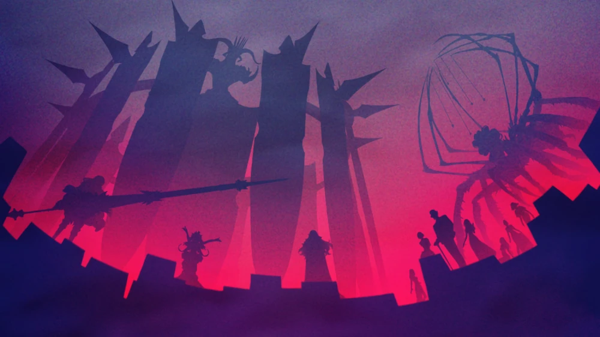
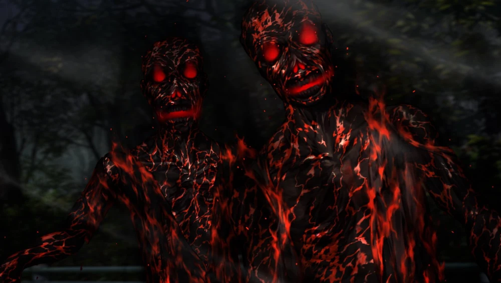

Dead Apostles are humans that became vampires either by the use of magecraft (though this kind is rare) or by the actions of another vampire of similar nature (in this case, either a True Ancestor or another Dead Apostle). The Dead Apostles also includes creatures that weren't humans, such as animals.
Among the creatures that fall under the vampire category, they are the most numerous.
They are the main targets of the Executors of The Burial Agency, an organization that exterminates the Dead Apostles and seals The Twenty-seven Dead Apostle Ancestors.
The original dead apostles were created to act as countermeasures in the case of a True Ancestor being overwhelmed by their thirst for blood. In exchange for losing their free will and becoming a tool to relieve the vampiric impulses of the True Ancestors as emergency meals, these individuals were granted powers and longevity similar to their masters. However, what they received was still a flawed form of immortality and it was soon discovered that they needed to suck the blood of others to survive.
Dead apostles have Vampiric Impulses which pushes them to suck the blood of others, and they also have the physical need to suck the blood of others in order to maintain their own bodies. For those Dead Apostles who used to be human, it is something not entirely dissimilar from love.
The result of repeatedly sucking the blood of humans was the emergence of a sense of superiority in the heart of the servants of the True Ancestors. Such a thing eventually gave birth to a feeling of rebellion towards their masters, which then lead the servants to find ways of strengthening their mental control and escaping from True Ancestors. After the rebellion, these blood-sucking humans became known as the Dead Apostles.
Dead Apostles first started appearing frequently around 20~100 AD deeming magi as their enemies and attacking them. Every Crusade was marked by the appearance of a Dead Apostle on the battlefield, each attacking humans indiscriminately on all sides of the war.
Although the Dead Apostles are maverick and individualistic by nature, there is a form of ruling body among them: The Twenty-seven Dead Apostle Ancestors.
The Dead Apostle Ancestors have existed for three thousand years. They are primarily individualistic, with the exclusion of the five members of the Age of Gods Alliance, and not every Dead Apostle Ancestor is an enemy of mankind.
The oldest Dead Apostle Ancestors are referred to as Elder Title: League of the Age of Gods. Each Dead Apostle Ancestor creates and rules over it's own kingdom and they divide the world of Dead Apostles into 27 powers.
The original twenty-seven were those who were able to escape their existence as "emergency rations" for the True Ancestors. As of the modern day, there are the "elders" of the BC era and the "upstarts" of the AD era.
As of modern day, some positions have been rendered empty, the total verified being twenty-one as of the 2010s AD.
Each Dead Apostle Ancestor has a Principle associated with them, also known as "the seeds of textural rules"). It is a sort of curse that manifests as a unique power distinct from their other properties as a vampire.
|  |
|---|
| The Dead Apostle Ancestors present at the "French Incident". |
Idea Blood: Hemonomic Principle is the blood that makes an Ancestor an Ancestor. It can either be inherited or created. the inheritance of the Idea Blood will raise the inheritor to a Rank IX Ancestor regardless of their original rank. Magi who became Dead Apostles and then later became Dead Apostle Ancestors are those who created their own Idea Blood through a vast amount of time and research.
Normally, the Idea Blood remains after the defeat of an Ancestor and manifests as a pulsing red fruit that looks like coagulated blood and their corresponding Principle would be lost.
Although they appear to have capacities beyond human limitations, most vampires actually acquired their powers by constantly refining human-inherent abilities throughout their extended lives. In other words, anyone with a similarly long lifespan has the potential to reach a level comparable to the Dead Apostles. The Dead Apostles also lost the human ability to procreate.
Contrary to popular belief, Vampirification is not the transformation of the body, but of existence. It’s like if the entry in the Root that read ‘human’ changed class to ‘Dead Apostle’ — it means that one has become a vampire in one’s very being. So one cannot undo Vampirification by putting your soul into another human physical body. Also vampires can be killed with conventional weaponry. However, that is a feat near impossible to accomplish due to their superior abilities when compared to a normal human.
Vampire blood itself contains Ether, which holds the power to materialize whatever they want, but it is limited to the form their soul takes.
Dead Apostles need a near regular uptake of blood as their bodies are constantly degenerating, and once they die, they won't leave a trace as their bodies turn into ash. This allows them to absorb genetic information and stabilize their own bodies.
High ranking Dead Apostles with underlings can have these ones procure the blood in their stead and they still will receive that blood no matter the distance (we got WIFI blood here).
Dead Apostles who suck the blood of humans and replace it with their own pass on the curse of vampirism, as their victims are now reborn as vampires under the control of their sire. The curse of vampirism is divided into several steps according to its depth and the name of each step is derived from the Church. The Dead Apostles themselves see the depth of the curse as a caste system, of social standing in vampiric society, in which Rank I-III are slaves, Rank IV-V are subordinates and Rank VI-IX are vampires
When a human becomes a vampire, their body often will transform into the most beautiful form it can take, a process which can change both the vampire’s apparent physical age and physical features.
Rank I: Corpse — A marionette dancing to the tune of its sire. A being that had it's blood sucked and then replaced with that of the sire's. A mere grunt which simply sucks blood and delivers it to it's sire. One of what are called "The Dead".
Rank II: Ghoul — A corpse mimicking the form it had in life, possessing a will yet incapable of coherent thought. While its sire's magical energy keeps it from decaying, its insides have completely disintegrated. As the brain's decomposition causes it to seek flesh and blood instinctively, it is more savage than a Rank l, as they can devour people in less than a few minutes. A 100% loyal soldier that can be programmed by its sire, it also dies with it's sire's death or by the sire's decision to cut off their magical energy connection. Counted among "The Dead".
|  |
|---|
| A mutated Ghoul known as: The Flaming Dead |
Rank III: Undead — From this point on a creature that can finally be called a vampire. A living corpse, that hasn't fully regained its mental faculties and lacks its sense of pain and taste, but can simulate a human lifestyle on its own. A high-ranking soldier whose brain has been reconstructed after death, that follows its sire after understanding what kind of creature it has become. They are still bound to their sire and return to being corpses when their sire gets destroyed or by the sire's decision that they are not needed anymore. These undead act as commanders to the lower ranked Dead and are not fazed by sunlight, but require periodic embalming treatment in order to conceal their true nature. Counted among "The Dead".
Rank IV: Nightkin — An undead who acts as a fledgling vampire while maintaining its original personality. A half-human vampire whose inhuman physical abilities come at the cost of experiencing extreme coldness and thirst. A low-ranking knight, that according to the Church can hold its own against one of their Executors. When those of Rank Ⅵ and above carefully drink the blood of their prey, their victim starts out as a vampire of this rank. They may become anemic under the sunlight, though it doesn't burn them yet.
In the magical world, one is considered "a person" upon reaching to this rank. It can now survive away from its sire. From the sire's point of view it has changed from an "object" to a "living thing", in a sense. Only one in a thousand people are able to reach this rank.
Rank V: Nightmare — Adding to the scope of Rank Ⅳ, at this point the curse within their blood allows them to manifest special powers deriving from their sire or perhaps arising from their own self.
Rank VI: Dead Apostle (Inferior) — A completely self-sufficient bloodsucker, who has lost the human ability to procreate. Though these Lords can create children through their bloodsucking incursions, they cannot sire a child that can exceed Rank Ⅵ — what you'd call a limit to these upstarts. Only one out of ten thousand people are able to reach this rank.
Rank VII: Dead Apostle (Superior) — Greater Dead Apostle. Those of Rank Ⅵ who were acknowledged by an Ancestor and bestowed with additional abilities. Though they share a name, this rank is of a wholly different scale from the previous one. To reach this rank is to become a poison that taints the land simply by existing.
They are a heresy that ordinary Executors cannot cross blades with, noble vampires permitted their own free will. Greater Dead Apostles do not show absolute obedience to their parent Ancestors; given the chance they can defeat them and inherit their curse.
Rank VIII: Successor — A talented vampire chosen by an Ancestor as their own successor. A prince or princess, who is in a position to inherit the Idea Blood of a Dead Apostle Ancestor upon that Ancestor's destruction.
Assuming a minimum of two for each Ancestor, there are more than fifty Rank Ⅷ individuals. Some of them are even said to have been created in imitation of the True Ancestors.
Rank IX: Ancestor — The old Dead Apostles who broke free from their role as emergency rations and achieved victory in their struggle for independence as wholly distinct beings.
Anyone who studied magecraft knows this, whether from the Mage's Association, the church, or a standalone guy.
Info known by higher positions or specific fields in The Mage's Association.
Info known by Specific divisions of the church of the Church.